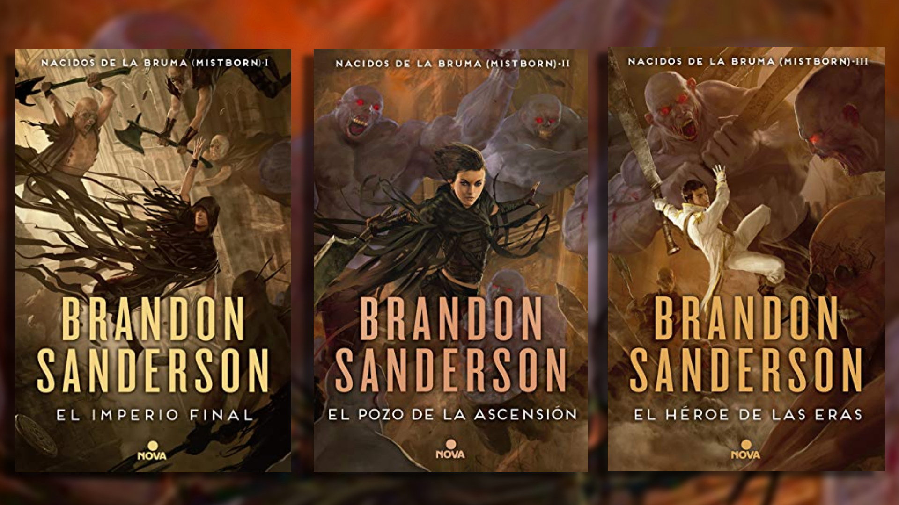

¿Por qué deberías leer Nacidos de la Bruma?
¿Estás buscando una historia que te atrape desde la primera página? Entonces debes conocer *Nacidos de la Bruma* de Brandon Sanderson, una de las sagas de fantasía más originales y revolucionarias de los últimos tiempos.
En lugar del clásico héroe con espada, Sanderson nos presenta a Vin, una joven ladrona que sobrevive como puede en un mundo oprimido y gobernado por un supuesto dios inmortal, el temido Lord Legislador. ¿Su misión? Ser parte de una banda que planea derrocarlo. Pero esta no es una simple historia de revolución… es una obra que mezcla desesperanza, magia con reglas únicas y personajes inolvidables.
La saga te lleva a Luthadel, una ciudad donde la ceniza cae del cielo, la nobleza abusa de su poder y los oprimidos, llamados Skaa, luchan por sobrevivir. Pero hay esperanza en la figura de Kelsier, el carismático “superviviente de Hathsin”, quien con astucia, carisma y poder alomántico liderará una revolución.
La Alomancia, el sistema de magia basado en metales que se ingieren, es una joya en sí misma. Aquí, ganar una batalla no depende solo de fuerza, sino de inteligencia. Cada metal otorga un poder distinto, y los más poderosos pueden usarlos todos. ¿Te imaginas volar usando monedas o manipular emociones con precisión quirúrgica?
La ambientación sombría, con una constante neblina que oculta misterios y terrores, refuerza la sensación de un mundo desgastado… pero lleno de potencial para cambiar.
Y no podemos olvidar a los personajes. Vin, Elend Venture y Kelsier no son simples figuras de fantasía: son seres humanos complejos, con miedos, esperanzas, contradicciones… y un propósito que los une: acabar con la tiranía.
¿Por qué leer *Nacidos de la Bruma*? Porque es más que fantasía. Es una historia que te hará reflexionar, reír, llorar, y sobre todo, creer que incluso en los mundos más rotos, hay esperanza si alguien se atreve a luchar.